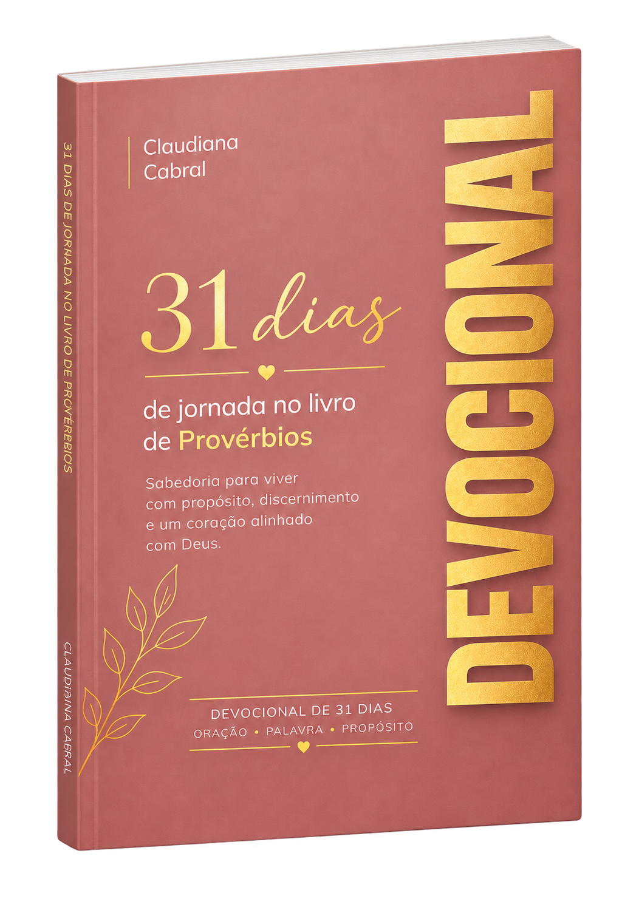

Cada mulher tem uma história.
E toda história merece ser ouvida.
Sou Claudiana Cabral, neuropsicoterapeuta em formação, pedagoga, pastora e mentora de mulheres. Este é um espaço de escuta, consciência e desenvolvimento, com acolhimento e respeito à história de cada mulher.
Conheça meu trabalho →Uma jornada para viver a sabedoria na prática.

31 Dias de Jornada — Sabedoria na Prática
Reflexões, ensinamentos bíblicos, orações e desafios práticos inspirados nos 31 capítulos de Provérbios.
“Sabedoria não é saber muito. É aprender a viver bem diante de Deus.”
Antes de começar, talvez você queira saber.
Para quem é o acompanhamento? +
Para mulheres que desejam compreender melhor suas experiências, emoções e escolhas com acompanhamento profissional e cuidadoso.
Como funciona a primeira conversa? +
A primeira conversa serve para compreender sua demanda, explicar o processo e avaliar se este é o caminho adequado para você.
Qual é a diferença entre acompanhamento e mentoria? +
São propostas diferentes. O acompanhamento parte da escuta clínica; a mentoria é orientada a clareza, decisões e desenvolvimento.
JORNADA
DEVOCIONAL
DO CUIDADO
Um espaço de escuta
para você.
Saiba mais sobre o acompanhamento individual e os próximos passos.
Entre em contato →Sua experiência importa.
Compartilhe sua opinião sobre os livros e conteúdos de Claudiana Cabral.
Deixe sua avaliação
Experiências compartilhadas
Depoimentos aprovadosCarregando avaliações...